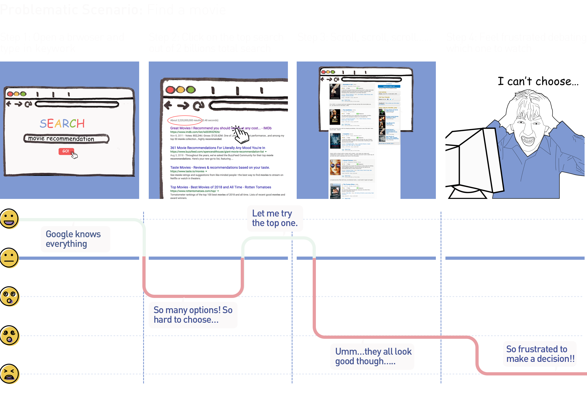
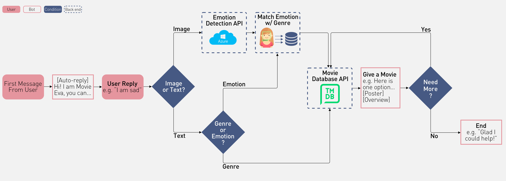
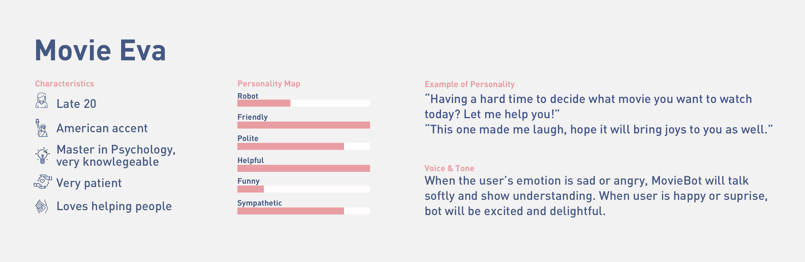
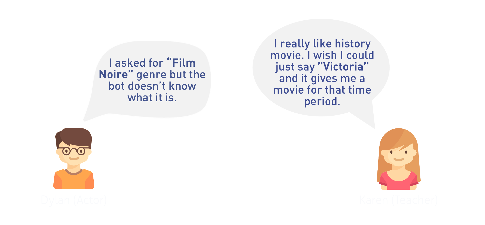

Final Product Demo
Why Movie Recommendation?
Indeed, there are a lot of movie recommendation services out there on the Internet, but they are not very helpful. If you are indecisive like me, the more options there are, the harder it is to choose one.
Why Chatbot?
Inspired by the HuggingFace chatbot, I decided to use a chatbot to achieve my goal. I wanted to explore more about the concepts of “conversational interface” and “zero-UI” because I want to drive users’ attention back to the core interaction with a service instead of the interface.
How Does a Chatbot Solve the Problem?

How To Achieve The Goal?
Application Programming Interface (API) is powerful. I used Azure Face API from Microsoft to analyze emotion from user’s selfie, and the Movie DB movie database API to pull movie information.
Okay. What Is The Bot’s Personality?
The bot is named Movie Eva. I chose this name because it was easy to remember, and related to what she could do. According to a study on the Nielsen Norman Group, the tone of voice in the text message can impact how users receive the messages. I wanted Movie Eva to sound more human-like, friendly, delightful, and empathetic to increase her trustworthiness.
Design Conversation
Before starting to code the chatbot, I mapped out the conversation flow of the bot, indicating the user’s reply and bot’s response in a more detailed and authentic level. This step also served as a conversation storage where I could copy the text and put it into the code.

Demo

User Testing
I did observation with the Think-aloud protocol with 10 users. I found out that users tended to ask for out-of-range requests without following the prompts. Some users wanted more casual conversation, which was not planned in the conversation flow. So two takeaways: 1. Diversify the way of searching 2. Refine conversation to support casual chat
What Did I Learn?
1. Need more time for user research
Since this a 4-week long class project, I did not have enough time to do a comprehensive user research with a bigger sample size and more diverse user representations. With more research data, I will be more accurate matching movies for moods.
2. Insufficient user testing
This chatbot only went through 3 times of iteration, mainly focusing on the usage of API. However, I would like to focus more on the conversation flow in the future.
3. Inexpierienced with Dialogflow API
My original plan was to design conversations in the application, Dialogflow, and use it’s API in my Ruby code to provide users with better communication. However, the plan failed because I didn’t have enough time to experiment with the API. In my next step, utilizing Dialogflow will be my focus.
© Designed & coded by Qicheng Yang